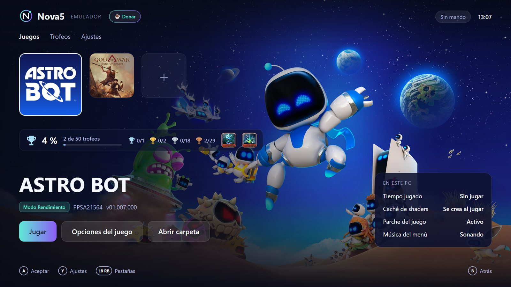
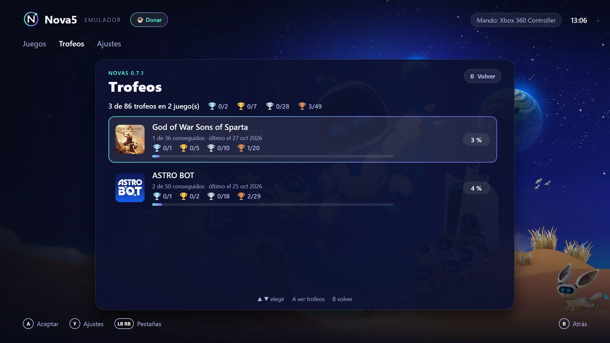
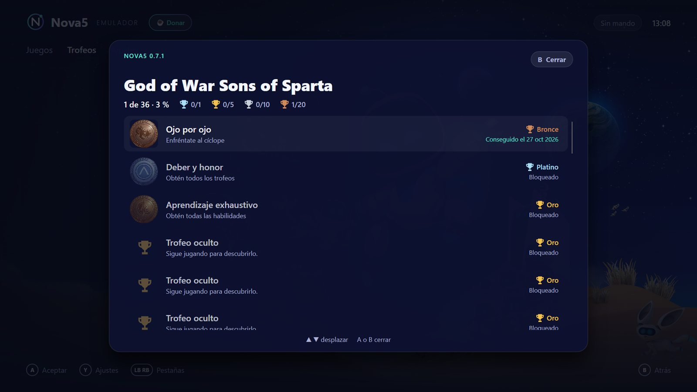
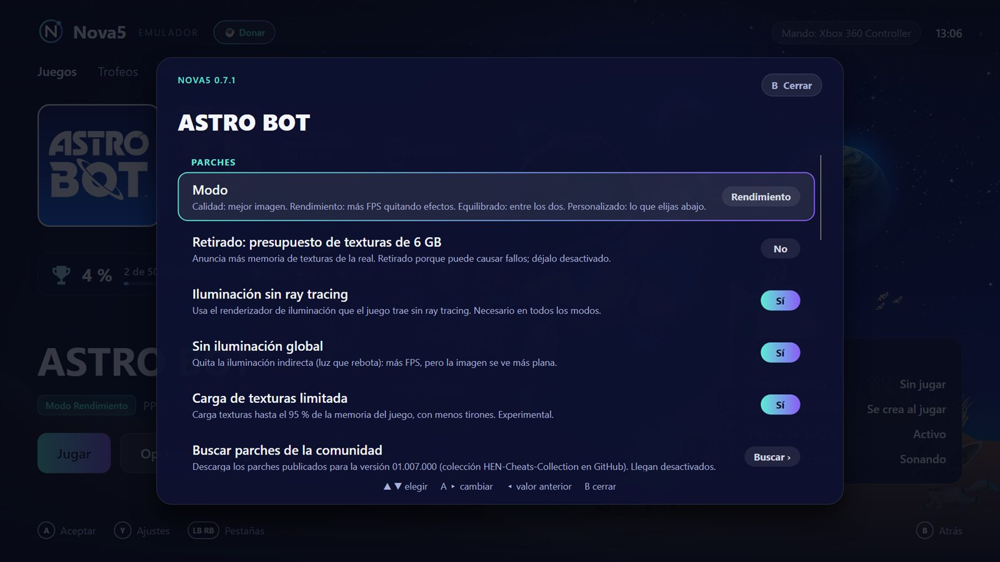
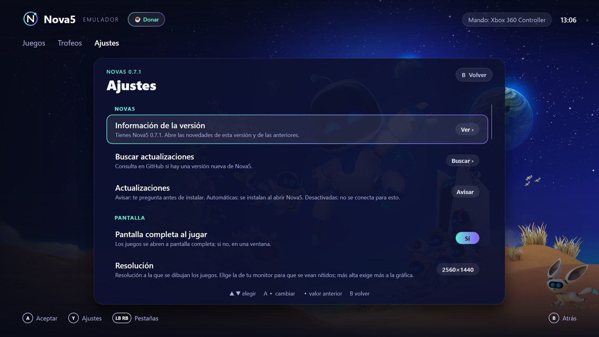

Interfaz de consola
Pantalla completa, carátulas grandes y el fondo de cada juego en alta resolución, con transiciones suaves.
Código abierto · Gratis · Para Windows
Nova5 es un emulador de PS5 para PC con un lanzador pensado para el sofá: carátulas y fondos de cada juego, su música de menú al seleccionarlo y control total con mando.
Versión 0.7.1 · Windows 10/11 de 64 bits · 53 MB · Proyecto experimental
descargas

Lo nuevo de cada versión, en resumen. El lanzador te muestra lo mismo cuando se actualiza, y puedes volver a verlo en Ajustes › Información de la versión.
Cargando las novedades…
Capturas reales del lanzador: trofeos, opciones de cada juego y ajustes, todo con mando, teclado o ratón.




Nova5 combina el emulador KytyPS5, con mejoras de rendimiento propias, y un lanzador hecho desde cero.
Pantalla completa, carátulas grandes y el fondo de cada juego en alta resolución, con transiciones suaves.
Al pasar por un juego suena su propia música de menú, en bucle y con fundido, sin tener que abrirlo.
Navega con la cruceta o el stick y abre juegos con un botón. También funciona con ratón y teclado.
Optimizaciones propias medidas juego a juego. Demon's Souls a 60 FPS y Astro Bot a 50–60 FPS en el inicio y la galaxia, en nuestras pruebas.
Detecta tu procesador y tu mando, aplica los ajustes recomendados y se actualiza solo cuando sale una versión nueva.
Licencia GPL-2.0. Cualquiera puede revisar el código, aprender de él y contribuir a mejorarlo.
Nova5 usa el núcleo de KytyPS5 con mejoras propias, así que los juegos que funcionan allí deberían ir igual o mejor aquí. La lista se carga en directo desde los informes de la comunidad de KytyPS5; los marcados Probado en Nova5 los hemos comprobado nosotros, y los Jugable según la comunidad son juegos que los informes de KytyPS5 describen como jugables de principio a fin, todavía sin comprobar en Nova5.
Cargando la lista de compatibilidad…
Datos: informes de la comunidad KytyPS5 (GPL-2.0). "En juego" no garantiza que todo el juego sea jugable; el rendimiento depende mucho del procesador y la tarjeta gráfica.
Descarga el instalador y ejecútalo. No necesita permisos de administrador ni programas adicionales.
Pulsa el botón + y elige la carpeta con tus juegos de PS5 extraídos de copias que poseas.
Elige un juego con el mando y pulsa A. Nova5 se aparta mientras juegas y vuelve al terminar.
No. Nova5 no incluye ni descarga juegos, firmware ni claves. Solo funciona con juegos que hayas extraído de copias que poseas legalmente.
Desarrollar y usar emuladores es legal en muchos países. Lo que no es legal es descargar juegos que no te pertenecen. Consulta la legislación de tu país.
El instalador todavía no tiene firma digital de pago. Pulsa "Más información" y luego "Ejecutar de todas formas". Puedes revisar el código fuente para comprobar qué hace.
Nova5 está basado en KytyPS5 e incorpora sus avances. Añadimos un lanzador nuevo y nuestras propias mejoras, y respetamos su licencia GPL-2.0.
La emulación de PS5 es muy reciente y cada juego usa partes distintas de la consola. Cada versión arregla fallos y mejora el rendimiento para todos los juegos.

Nova5 es y seguirá siendo gratis. Si quieres ayudar a que avance más rápido, puedes donar en Ko-fi ☕.